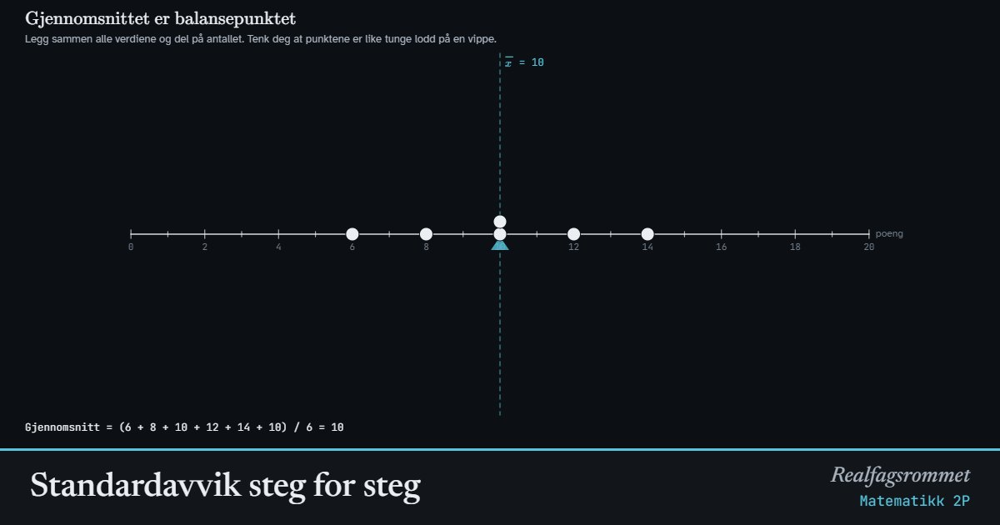

Standardavvik steg for steg
Standardavviket forteller hvor langt verdiene typisk ligger fra gjennomsnittet. Gå gjennom de fem stegene og se hvordan tallet blir til: avvik, kvadrater, gjennomsnitt og kvadratrot.
Start animasjonen
Formler
Om animasjonen
Punktene er poeng på en prøve med maks 20 poeng. Du kan også skrive inn dine egne tall i feltet «Egne tall». Standardavviket måler spredningen: hvor langt verdiene typisk ligger fra gjennomsnittet .
Vi kan ikke bare ta gjennomsnittet av avvikene, for de positive og de negative avvikene opphever hverandre alltid. Når vi kvadrerer avvikene, blir alle positive. Kvadratene er tegnet som ekte kvadrater: siden er avviket og arealet er avviket i andre.
Gjennomsnittet av kvadratene kalles variansen, . Den har enheten «poeng i andre», som er vanskelig å tolke. Derfor tar vi kvadratroten og får standardavviket, som har samme enhet som dataene.
Fordi avvikene kvadreres, teller store avvik mye. Én uteligger kan derfor øke standardavviket kraftig. I GeoGebra gir kommandoen Standardavvik( ) dette tallet. Utvalgsstandardavviket deler på i stedet for og blir litt større.
Prøv dette
- Skriv inn egne tall, for eksempel høyden til fem i klassen. Hva blir standardavviket?
- Hvorfor blir summen av avvikene alltid 0? Dra i punktene og sjekk.
- Sammenlign «Liten spredning» og «Stor spredning». Begge har gjennomsnitt 10. Hva skjer med kvadratene og med σ?
- Legg til en uteligger. Hvorfor øker standardavviket så mye mer enn gjennomsnittet?
- Dra punktene slik at σ = 0. Hvordan ser datasettet ut da?
- Regn ut standardavviket for 4, 6 og 8 for hånd. Sjekk svaret ved å lage det samme datasettet her.
Kompetansemål
- Matematikk 2P: Sentralmål og spredningsmål